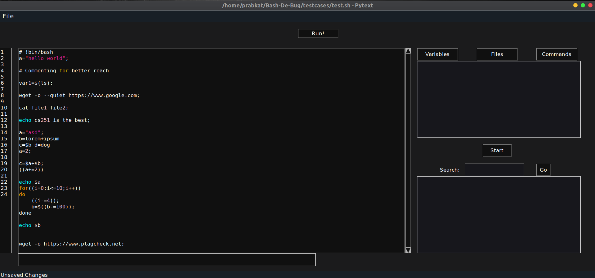
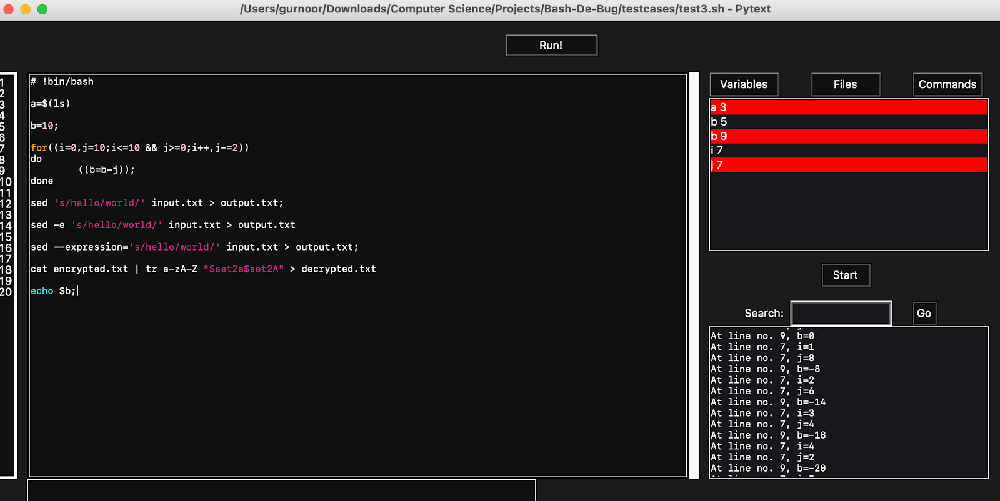

|
Bash-de-bug
version 1.0.0
Debugging Bash script
|


|
|
Bash-de-bug
version 1.0.0
Debugging Bash script
|
|
Course Project of CS251, Autumn 2020.
The aim of this project is to build a debugger, primarily intended for Bash Scripts, that prints out the variables and the contents of files that are being used in the program. Although the way this is being built, it wont be hard to extend it to other languages as well. The setup scipt for this can be found here.
The project is overall divided into two parts - one is the front-end part where we build a Tkinter based GUI for the project, and another is the backend part, where we manage writing a parser for Bash scripts, detecting variable assignments in it, and inserting the print statements in a copy of the script. Then we execute the script from within python, and redirect the output to the user, filtering the line numbers / variable names requested.
Initially, we planned to just do a string search for the file, detect = signs for assignment operations, check for a few more conditions and conclude that the variable is detected. But this approach did not seem elegant or challenging, it seemed just like a workaround. So we decided to go with parsing.
tkinter module in python.This is an example of how the IDE region should look (in Dark Mode!!)

wget, ls, cat, cut, etc.For the following input,
# !bin/bash
a=$(ls)
b=10;
for((i=0,j=10;i<=10 && j>=0;i++,j-=2))
do
((b=b-j));
done
sed 's/hello/world/' input.txt > output.txt;
sed -e 's/hello/world/' input.txt > output.txt
sed --expression='s/hello/world/' input.txt > output.txt;
cat encrypted.txt | tr a-zA-Z "$set2a$set2A" > decrypted.txt
echo $b;
the abstract syntax tree that we get is
and the corresponding tokens generated are
[@58,89:91='sed',<'sed'>,12:0] [@59,92:92=' ',<SPACE>,12:3] [@60,93:108=''s/hello/world/'',<SINGLE_STRING>,12:4] [@61,109:109=' ',<SPACE>,12:20] [@62,110:118='input.txt',<FILENAME>,12:21] [@63,119:119=' ',<SPACE>,12:30] [@64,120:120='>',<COMPARE>,12:31] [@65,121:121=' ',<SPACE>,12:32] [@66,122:131='output.txt',<FILENAME>,12:33] [@67,132:132=';',<';'>,12:43] [@68,133:133='\n',<SPACE>,12:44] [@69,134:134='\n',<SPACE>,13:0] [@70,135:137='sed',<'sed'>,14:0] [@71,138:138=' ',<SPACE>,14:3] [@72,139:140='-e',<SINGLE_TAG>,14:4] [@73,141:141=' ',<SPACE>,14:6] [@74,142:157=''s/hello/world/'',<SINGLE_STRING>,14:7] [@75,158:158=' ',<SPACE>,14:23] [@76,159:167='input.txt',<FILENAME>,14:24] [@77,168:168=' ',<SPACE>,14:33] [@78,169:169='>',<COMPARE>,14:34] [@79,170:170=' ',<SPACE>,14:35] [@80,171:180='output.txt',<FILENAME>,14:36] [@81,181:181='\n',<SPACE>,14:46] [@82,182:182='\n',<SPACE>,15:0] [@83,183:185='sed',<'sed'>,16:0] [@84,186:186=' ',<SPACE>,16:3] [@85,187:199='--expression=',<FULL_TAG>,16:4] [@86,200:215=''s/hello/world/'',<SINGLE_STRING>,16:17] [@87,216:216=' ',<SPACE>,16:33] [@88,217:225='input.txt',<FILENAME>,16:34] [@89,226:226=' ',<SPACE>,16:43] [@90,227:227='>',<COMPARE>,16:44] [@91,228:228=' ',<SPACE>,16:45] [@92,229:238='output.txt',<FILENAME>,16:46] [@93,239:239=';',<';'>,16:56] [@94,240:240='\n',<SPACE>,16:57] [@95,241:241='\n',<SPACE>,17:0] [@96,242:244='cat',<COMMAND>,18:0] [@97,245:245=' ',<SPACE>,18:3] [@98,246:258='encrypted.txt',<FILENAME>,18:4] [@99,259:259=' ',<SPACE>,18:17] [@100,260:260='|',<'|'>,18:18] [@101,261:261=' ',<SPACE>,18:19] [@102,262:263='tr',<COMMAND>,18:20] [@103,264:264=' ',<SPACE>,18:22] [@104,265:270='a-zA-Z',<VAR>,18:23] [@105,271:271=' ',<SPACE>,18:29] [@106,272:285='"$set2a$set2A"',<DOUBLE_STRING>,18:30] [@107,286:286=' ',<SPACE>,18:44] [@108,287:287='>',<COMPARE>,18:45] [@109,288:288=' ',<SPACE>,18:46] [@110,289:301='decrypted.txt',<FILENAME>,18:47] [@111,302:302='\n',<SPACE>,18:60] [@112,303:303='\n',<SPACE>,19:0] [@113,304:307='echo',<COMMAND>,20:0] [@114,308:308=' ',<SPACE>,20:4] [@115,309:310='$b',<BASH_VAR>,20:5] [@116,311:311=';',<';'>,20:7] [@117,312:311='<EOF>',<EOF>,20:8]
The GUI generated using Tkinter, giving an idea of what we hope to accomplish
